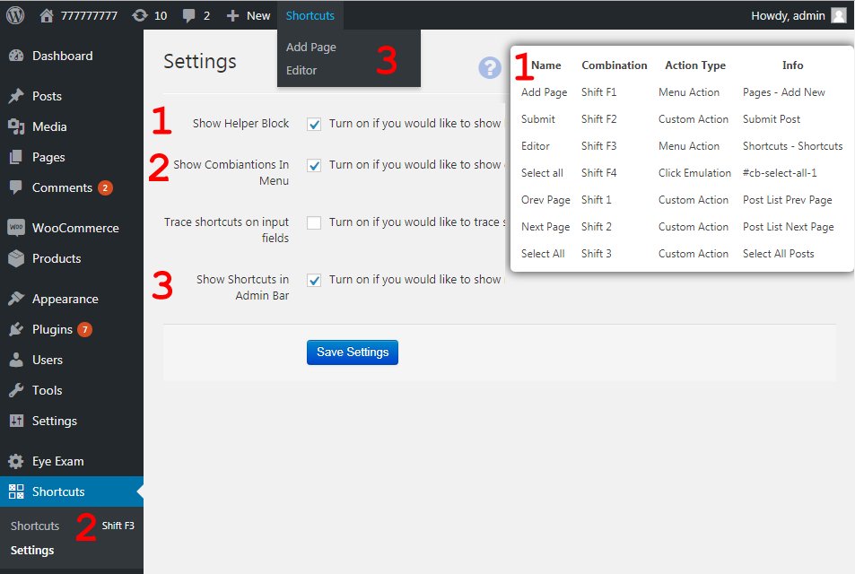

Wordpress Keyboard Shortcuts
- by: Evgen "EvgenDob" Dobrzhanskiy
Do you use shortcuts in on your computer? Like open some programs with shortcuts, open menues, manipulate with data ? With this plugin you can have same functionality inside Wordpress.
Wordpress keyboard Shortcuts plugin allow you to bind keyboard shortcuts to different Wordpress elements and events. Like click on some button, go to menu etc. Imagine you can manipulate all menus, and elements with only keyboard.
Want to Add Post with just one click ? - No problem!
Want to navigate via posts, select them, make actions with them ? - No problem, just bind all combinations you need to actions and script will do all things for you.
For example:
Imagine you write different articles. You need to Add set of articles - So you will need to add content, then add category, set featured image, select post type. With this plugin you can do it just with 3 clicks. Just bind combinations you need to actions and do all things extremely fast.
To install plugin just upload it via backend and activate in a default Wordpress way.
Plugin have pretty simple shortcuts editor where you can select keys combination for any action you need.
So here is main editor.
Here you can enter combination for shortcut, set what action should be done on keys combination pressed. Enter details of section. Here you can add custom name to combination and select if it should be visible in top menu. And for sure you can remove row, add new or clone existed. So lets get into Action Types. We have three of them:
-
Menu Action - with this type of action on shortcut pressed you will go to any Menu page. That can be useful for fast navigation in backend menu.
-
Custom Action - its set of predefined actions. You can publish posts, preview, make different action. If you need any custom action but don't see it in list you can write it in comments and I'll add it in next release.
-
Click Emulation - its option for experienced users, but it have unlimited abilities. With this type of action you can emulate click on any element you need. Buttons, lists, tabs etc. Anything. So to use this type of action you will need to know CSS elector for this element. E.g. to select all posts in posts list you need to emulate click on checkbox to select all. It's selector is "#cb-select-all-1". So you can just add combination in editor, select Click Emulation as Action Type and enter this CSS selector in Details input field.
Let's start with Settings  Here we have next options:
-
"Show Helper Block" This option allow you to show you top right helper block, that have info about all combinations. Just in case you have bad memory or learn new combinations.
-
"Show Combinations" In left side admin menu small string with combination will appear near menus, to remind you combination for this menu option.
-
"Trace shortcuts on input fields" If this option turned on - combination will be traced when you input something in input block like input or textarea. Usually turned Off.
-
"Show Shortcuts in Admin Bar" This option will add shortcuts to Wordpress admin bar. That will allow you to have actions in top bar. Just maybe someone will found this useful.